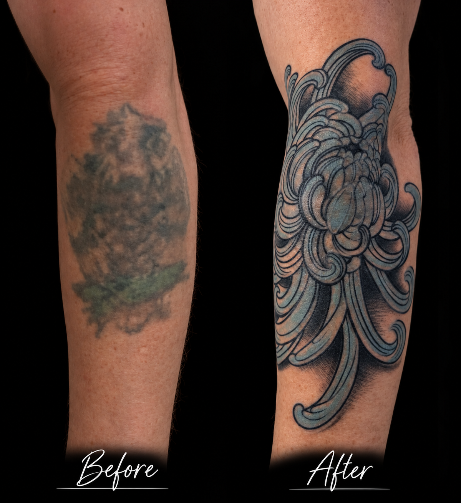
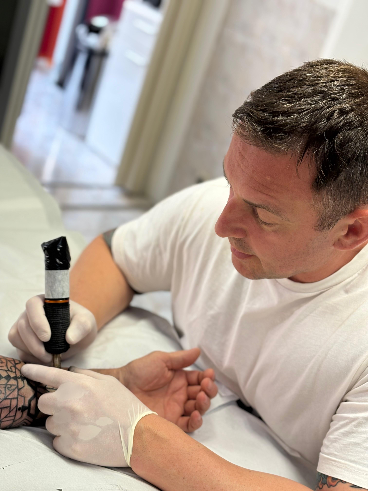

Tätowierer für Cover-ups,
große Arbeiten und japanischen Stil
OGAMI TATTOO ist das Tattoo-Atelier von Frank Coltan-Wagner. Seit über 15 Jahren tätowiere ich großflächige Farbarbeiten im traditionellen japanischen Stil und überarbeite alte Tattoos mit Cover-ups. Ich arbeite mobil von Dannstadt aus in der Vorderpfalz und im Rhein-Neckar-Raum.
Eine Auswahl aus 15 Jahren. Die meisten dieser Arbeiten sind über mehrere Sitzungen entstanden.

Die meisten meiner Kunden kommen mit einem Tattoo, das sie seit Jahren stört.
Ein Cover-up macht daraus ein Bild, das man wieder zeigen will.
Mehr zu Cover-ups →
Mein Weg zum Tätowieren war kein gerader. Nach der Schule habe ich ein soziales Jahr in einem Wohnheim für Menschen mit Behinderung gemacht, danach im Altenheim gearbeitet. Dann bin ich für drei Jahre nach Thailand gegangen und habe in einem Camp Thaiboxen trainiert.
Mit 29 wusste ich: Ich will tätowieren. Eine Ausbildung dafür gibt es nicht. Also habe ich eine Mappe gezeichnet und bin damit jedes Studio in Karlsruhe und Umgebung abgelaufen. Einer hat sich gemeldet, ein erfahrener Tätowierer und Zeichner. Zweieinhalb Jahre bin ich jede Woche zu ihm gefahren und habe Perspektive, Aufbau und Komposition gelernt. Deshalb kann ich Motive heute frei auf dem Körper entwickeln, statt Vorlagen abzupausen.
Danach habe ich über 15 Jahre in einem Mannheimer Studio gearbeitet, mit eigenem Kundenstamm und eigenen Terminen. Mehrere tausend Arbeiten sind in der Zeit entstanden, viele davon über Monate. Mit OGAMI TATTOO arbeite ich jetzt selbstständig und mobil, so, wie ich Tätowieren verstehe: mit Zeit für Beratung und Entwurf und ohne Fließband.
Kraftsport mache ich, seit ich zwölf bin, dazu Sportschießen bis zur Europameisterschaft. Beides lehrt dasselbe, was ein großes Tattoo braucht: Geduld, Präzision und eine ruhige Hand.
Warum OGAMI: [PLATZHALTER – Bedeutung des Namens, falls es eine Geschichte gibt]
Cover-ups & Überarbeitungen
Alte oder misslungene Tattoos neu aufbauen. Ich schaue mir zuerst genau an, was da ist: Farbtiefe, Linienstärke, Narben. Dann entwerfe ich ein Motiv, das die alte Zeichnung aufnimmt und darin verschwinden lässt.
Große Projekte
Ganzer Arm, Bein oder Rücken über mehrere Monate. Ich plane das Gesamtbild vorab und zeichne die tragenden Linien freihändig auf den Körper, damit das Motiv der Körperform folgt. Du bekommst einen Ablaufplan mit festen Folgeterminen.
Japanischer Stil
Du bringst einen Wunsch mit – etwa einen Koi, einen Drachen oder eine Hannya-Maske – und ich setze ihn so um, dass Aufbau, Bildfluss und Hintergrund den Regeln des Stils folgen.
Farbe
Farbe wird in mehreren Schritten aufgebaut und zeigt sich erst nach dem Abheilen. Das braucht Erfahrung.
Kleinere Motive mit Bedeutung
Ich berate ehrlich, welche Stelle sich eignet und welche Linienstärke auch in zehn Jahren noch lesbar ist.
Weitere Stile
Polynesisch und aktuelle Stile in Schwarz/Grau.
[PLATZHALTER – mobiles Modell konkret beschreiben, z. B. Gastspots in Partnerstudios, Conventions] Grundsatz: Ich habe kein Studio mit Laufkundschaft. Wir vereinbaren einen Termin, und ich sage dir, wo wir uns treffen.
-
Anfrage
Schick mir Körperstelle, ungefähre Größe und deine Idee. Bei Cover-ups schick mir ein Foto des alten Tattoos.
-
Vorgespräch
Wir klären Motiv, Größe, Platzierung, Farbe, Zeitplan, gesundheitliche Fragen und die Nachsorge. Danach bekommst du eine Einschätzung von Aufwand und Kosten.
-
Entwurf
Ich zeichne von Hand und am Grafiktablett. So lassen sich Änderungen schnell umsetzen.
-
Termin
Bei größeren Arbeiten und Cover-ups mit Anzahlung, die verrechnet wird. Große Projekte laufen in Etappen mit festen Folgeterminen.
-
Nachsorge
Du bekommst schriftliche Pflegehinweise mit.
Termine & Orte
- – Termine werden hier eingetragen –
Hygiene
Ich arbeite mit Einwegmaterial: Nadelmodule, Farbkappen, Bezüge und Abdeckungen werden nach jeder Arbeit entsorgt. Meine Farben entsprechen den EU-Vorgaben, die Chargen dokumentiere ich. Gearbeitet wird nach schriftlichem Hygieneplan.
Kann jedes alte Tattoo mit einem Cover-up überdeckt werden?
Nicht jedes. Ein Cover-up wird fast immer größer und meist dunkler als das alte Tattoo. Sehr dunkle, flächige Motive lassen sich nicht immer abdecken. Das kläre ich im Vorgespräch anhand von Fotos ehrlich.
Machst du auch Laserentfernung?
Nein. Laserentfernung von Tattoos ist in Deutschland seit 2021 Ärzten vorbehalten. Wenn ein Cover-up nicht möglich ist, verweise ich an Fachärzte.
Wie lange dauert ein großes Projekt wie ein Sleeve?
Ein ganzer Arm oder Rücken braucht meist 30 bis 40 Stunden, verteilt auf mehrere Sitzungen über einige Monate. Den Ablauf planen wir am Anfang gemeinsam.
Was kostet ein Tattoo?
Das hängt von Größe, Stelle, Farbe und bei Cover-ups vom alten Tattoo ab. Nach dem Vorgespräch bekommst du eine klare Einschätzung. Für Termine nehme ich eine Anzahlung, die verrechnet wird.
Wo finden die Termine statt?
[PLATZHALTER – je nach mobilem Modell ausfüllen, z. B. Gastspots in Partnerstudios oder Conventions]
Ab welchem Alter tätowierst du?
Ich tätowiere nur Erwachsene ab 18 Jahren.
Wie pflege ich ein frisches Tattoo?
Du bekommst schriftliche Pflegehinweise mit. Die wichtigsten Punkte: sauber halten, dünn eincremen, in den ersten Wochen keine Sonne, kein Schwimmbad, keine Sauna.
Schick mir Körperstelle, ungefähre Größe und deine Idee. Bei Cover-ups ein Foto des alten Tattoos.
Ich antworte meist innerhalb von [X] Tagen.